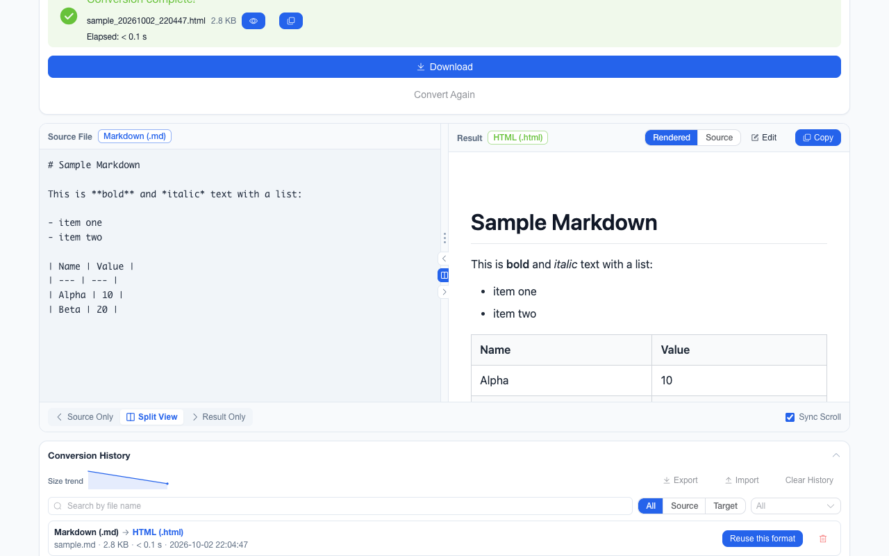

离线 · 无上传 · 浏览器本地完成Offline · no uploads · runs in the browser
Excel 转 JSON——按单元格值出，多 sheet 一张不丢Convert Excel to JSON from cell values — and no worksheet gets dropped
Excel 转 JSON 最容易做错的一件事，是取「显示文本」还是取「存储值」。显示文本是格式化之后的结果：1234.5 可能显示为 "1,234.50"，0.25 显示为 25.0%，布尔显示为 TRUE。这条链路取的是值，所以数字在 JSON 里是 number、布尔是 true/false。日期走的是另一条规则：单元格里存的是天数序列号，直接给 JSON 只会得到一个 45296.33 这样的数，所以日期在读取期渲染成 yyyy-mm-dd hh:mm:ss，再剥掉零时间——纯日期就是 YYYY-MM-DD。为什么不用 Date 对象：那条换算带本地时区误差（实测 Asia/Shanghai −43 秒），而解析期渲染出的文本在三个时区逐字节一致。The easiest thing to get wrong when turning Excel into JSON is taking the display text instead of the stored value. Display text is what formatting produced: 1234.5 may read "1,234.50", 0.25 reads 25.0%, a boolean reads TRUE. This route takes values, so a number is a JSON number and a boolean is true/false. Dates follow a different rule: what a date cell stores is a day serial, and handing that to JSON gives you 45296.33 — so date cells are rendered at read time into yyyy-mm-dd hh:mm:ss and the zero time is dropped, leaving YYYY-MM-DD for a plain date. Why not a Date object: that conversion carries a local-timezone error (measured at −43 seconds in Asia/Shanghai), while the text rendered during parsing came out byte-identical across three zones.

这条链路怎么走How the route runs
Excel (.xlsx)Excel (.xlsx) JSONJSON
共 1 步，由扩展的路径搜索自动选出，中间产物不落盘。1 step, chosen by the extension's own path search; intermediate results never touch the disk.
会保留什么What carries over
- 单工作表给「行对象数组」（首行做键）；多工作表按表名分组成一个对象，一张表都不会被丢One sheet gives an array of row objects (first row as keys); several sheets are grouped into an object keyed by worksheet name, so nothing is dropped
- 数值与布尔按存储值写成 JSON 的 number / true / false，不是 "1,234.50"、"25.0%"、"TRUE" 这类显示文本Numbers and booleans are written from the stored value as JSON numbers and true/false, not display text like "1,234.50", "25.0%" or "TRUE"
- 日期是机器可读的两段式：纯日期 YYYY-MM-DD，带时间 yyyy-mm-dd hh:mm:ss；渲染取自解析期文本，实测跨三个时区逐字节一致Dates are machine-readable in two forms: YYYY-MM-DD for a plain date, yyyy-mm-dd hh:mm:ss with a time, rendered from parse-time text that measured byte-identical across three timezones
- 工作簿作者显式指定的其它日期或时长格式被尊重，不会被两段式覆盖（例如 [h]:mm:ss 时长仍是 124:48:00）A date or duration format the workbook author set explicitly is respected rather than overwritten, so an [h]:mm:ss duration stays 124:48:00
- 结果在工作台里可按树 / 数组表 / 原文三种视图预览；单文件批次还会给出左右对照视图，右侧的结果侧可直接编辑后再下载The result previews in the workbench as a tree, an array table or the raw text; a single-file batch also opens the side-by-side view, whose result pane can be edited before you download it
如实说明的限制What it does not do
- 公式给的是它上次算出的缓存值；从没被计算过的公式没有缓存可给A formula yields its cached result; one never evaluated has no cache to yield
- 样式、列宽、图表、透视表、条件格式与批注在 JSON 里没有位置Styles, column widths, charts, pivot tables, conditional formats and comments have no place in JSON
- 合并单元格只有左上角那一格带值，被覆盖的其余位置是空的A merged range carries its value only in the top-left cell; the covered positions come out empty
- 午夜时间戳与纯日期同形（都落成 YYYY-MM-DD）——这是两段式规则里写明的取舍A midnight timestamp is indistinguishable from a plain date, both landing as YYYY-MM-DD — a trade stated in the two-form rule
实操提示Working with it
- 读不到任何工作表时按该文件的错误处理，不会静默给回一个空数组；单个文件失败不影响批次里其余文件A workbook with no readable worksheet reports that file’s error rather than quietly returning an empty array, and one failure never stops the batch
- 一批最多 200 个文件、单个 100 MB 上限；JSON 结果可以继续转成 CSV 或 ExcelUp to 200 files per batch and 100 MB each; the JSON result can be converted on to CSV or Excel
常见问题Questions people actually ask
为什么多个 sheet 是一个对象而不是数组？Why an object rather than an array for multiple sheets?
因为数组表达不了「这一组行属于哪张表」。按表名分组是唯一能把工作簿结构完整交出去的形状；只有一个工作表时仍然是朴素的行对象数组。Because an array cannot say which worksheet a group of rows came from. Keying by sheet name is the only shape that hands over the workbook intact; with a single sheet you still get the plain array of row objects.
为什么有的字段是字符串？Why are some fields strings?
因为那个单元格的存储值本来就是文本——例如带前导零的编号。这是保真，不是漏转：把它猜成数字就会丢掉原值。Because the cell’s stored value is text — a zero-padded ID, say. That is fidelity, not a missed conversion: guessing it into a number would destroy the original.
.xls（97-2003）能转吗？Does it take .xls (97-2003)?
输入侧支持的是 .xlsx；老的二进制 .xls 请先在 Excel 或 LibreOffice 里另存为 .xlsx 再转。The supported input is .xlsx; save the legacy binary .xls as .xlsx in Excel or LibreOffice first.
不需要账号，也不需要联网：装好扩展后点图标，在新标签页里打开工作台，文件从磁盘直接选。No account and no network: install the extension, click its icon, and the workbench opens in a new tab reading straight off your disk.